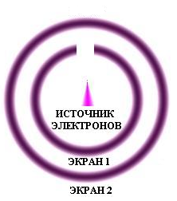
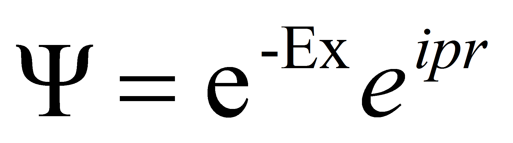
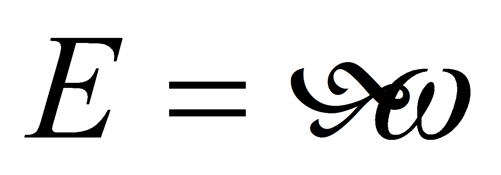

Отрицательный эксперимент Ренингера.

Схема этого эксперимента изображена на рис. Есть два
сферических экрана, один из которых имеет отверстие. В центре
находится источник электронов. Экраны покрыты сцинтиллирующим
веществом, то есть когда на них попадают электроны, то они начинают
светиться. Итак, происходит β-распад и вылетает электрон. Он
имеет импульс p.
Если экран 1 светится, значит, электрон попал в него. Если же экран 1
не светится, значит, электрон пролетел через отверстие. Таким
образом, мы располагаем информацией, что электрон не попал в экран 1,
мы имеем отрицательное знание. Это наше отрицательное знание меняет
волновую функцию (которая зависела от импульса). Следовательно,
импульс стал другим. Импульс электрона изменился, несмотря на то, что
ему не сообщили энергии, никакого взаимодействия не было. Это
произошло, потому что мы что-то узнали. Как однажды Белл процитировал
Йордана: “Наблюдения не только искажают величины, которые
должны быть измерены, они их создают. Во время измерения координаты,
электрон вынужден принять решение. Мы вынуждаем его занять
определённое положение в пространстве; до этого он не был там или в
каком-либо другом месте, тогда он ещё не выбрал определённое
положение в пространстве” Объяснение этого эксперимента,
аналогично объяснению опыта Элитзура и Вайдмана. Данный эксперимент
также основан на принципе редукции волнового пакета. Есть электрон в
состоянии с определённым импульсом. Происходит бета-распад
n→p+e+νe
.
Волна де-Бройля ,
,
гдe

Âu1= a1 u1
Âu2=a2u2
 имеет два собственных значения:a1 и a2. Пусть собственное значение a1 соответствует случаю, когда электрон попадает на первый экран (при этом возникает вспышка), а a2 - когда электрон пролетает через отвертсие (вспышка не возникает). Тогда Ψ превращается либо в u1, либо в u2 соответственно.